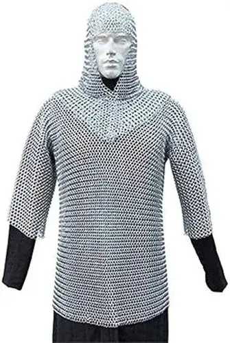
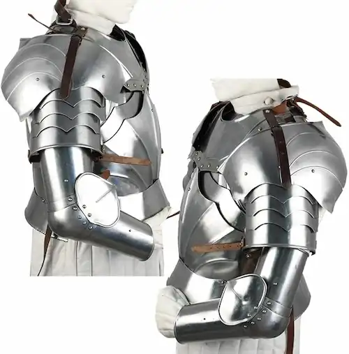
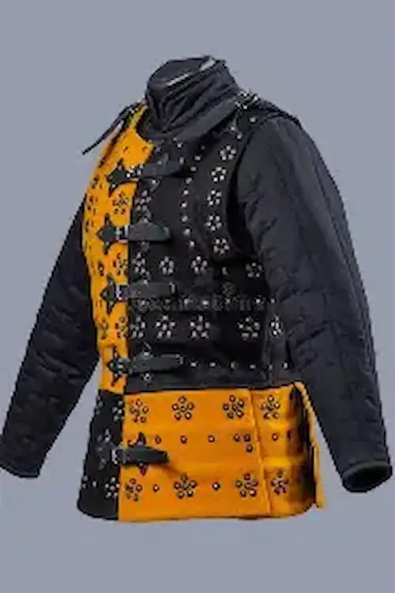
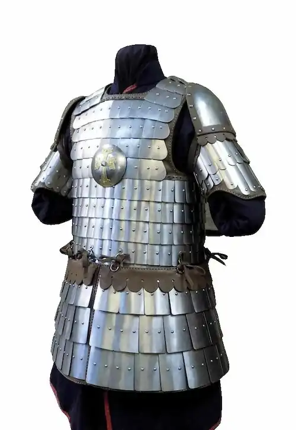
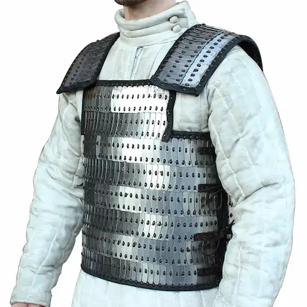
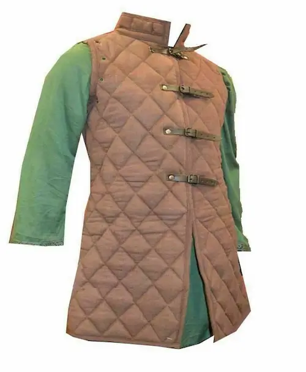

Overview
During the Middle Ages, armor evolved significantly to meet the demands of warfare. Knights and soldiers wore different styles depending on the period and region.

Chainmail
Flexible armor made of interlinked rings, popular from the 11th to 13th centuries.

Plate Armor
Heavy steel plates covering the body, designed to deflect blows and arrows, dominant in the 15th century.

Brigandine
Cloth or leather garments reinforced with small metal plates.

Scale Armor
Overlapping metal scales sewn onto fabric or leather, resembling fish scales and providing layered protection.

Lamellar
Constructed from small rectangular plates laced together, widely used across Europe and Asia for its adaptability.

Gambeson
A padded defensive jacket worn alone or beneath other armor, absorbing shock and preventing chafing.